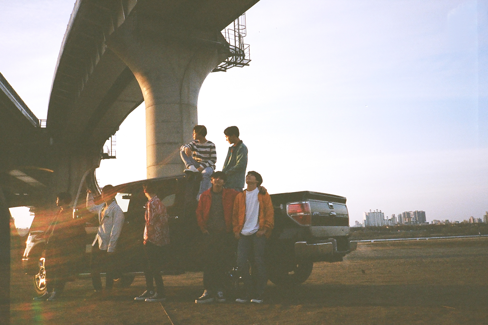

BTS
Es un grupo surcoreano formado en Seúl en 2010, que debutó el 13 de junio de 2013 bajo la compañía Big Hit Music.2 Está compuesto por siete integrantes: Jin, Suga, J-Hope, RM, Jimin, V y Jungkook, quienes son los que coescriben y coproducen la mayor parte de su material discográfico. A pesar de haber sido creado con un estilo principalmente hip hop, ha llegado a incorporar una gran variedad de géneros en su repertorio musical.
Tras su debut con el álbum sencillo 2 Cool 4 Skool en 2013, BTS publicó los EPs O!RUL8,2? (2013) y Skool Luv Affair (2014), así como su primer álbum de estudio, Dark & Wild (2014). A partir de 2015 comenzó a establecer su reputación como un grupo socialmente consciente con sus lanzamientos de la serie The Most Beautiful Moment in Life: Part 1 (2015), Part 2 (2016) y Young Forever (2016). Continuó extendiendo esta imagen con Wings, que fue su primer disco en comercializar más de un millón de copias en Corea del Sur, y con su reedición You Never Walk Alone. Para 2017 entró al mercado musical global como el principal promotor de la ola coreana, especialmente en Estados Unidos, y rompió múltiples récords de ventas. Se convirtió en el primer artista coreano en recibir una certificación por parte de la RIAA, con su sencillo «MIC Drop»; en encabezar la lista Billboard 200, con Love Yourself: Tear (2018), y en obtener un disco de platino en EE.UU, con Love Yourself: Answer (2018). Además, tuvo cuatro álbumes número uno en EE.UU en menos de dos años, un suceso que ninguna banda había alcanzado desde que The Beatles lo realizó entre 1995 y 1996. Por otro lado, en 2020 fue el primer artista que lideró simultáneamente la Billboard Global 200 y la Billboard Hot 100, con su sencillo —nominado a un premio Grammy— «Dynamite». Posteriormente repitió esto con «Savage Love», «Life Goes On», «Butter» y «Permission to Dance», por lo que acumuló cinco sencillos número uno en EE.UU y llegó a ser el artista que lo hizo en el menor tiempo desde Michael Jackson, quien lo consiguió entre 1987 y 1988.
BTS es el artista con mayores ventas en la historia de Corea del Sur, con más de treinta millones en Gaon Music Chart, y mantiene el récord del álbum más vendido en ese país con Map of the Soul: 7. Así mismo, es el primer y único artista de habla no inglesa en ser nombrado como el artista global del año (2020) por la IFPI, en estar en la lista Top Touring Artists of the 2010s de Billboard y en dar un concierto —con todas las entradas agotadas— en el Estadio de Wembley. Por otro lado, la revista Time los incluyó en la portada de su edición internacional como «Líderes de la nueva generación» y han aparecido en varios de sus listados; estuvieron entre las 25 personas más influyentes en Internet, desde 2017 hasta 2019, y entre las 100 personas más influyentes en el mundo en 2019, en la que los apodaron «Príncipes del Pop».
El grupo ha recibido numerosos reconocimientos por su trabajo, incluyendo seis American Music Awards, nueve Billboard Music Awards y nominaciones en los premios Grammy y premios Brit. Tras establecer su campaña antiviolencia Love Myself, en colaboración con UNICEF, dio un discurso tanto en la 73.ª como en la 75.ª edición de la Asamblea General de las Naciones Unidas. Además, sus integrantes son los receptores más jóvenes de la Orden al Mérito Cultural, otorgada por el presidente de Corea del Sur por ayudar a expandir la cultura e idioma coreano en el mundo.